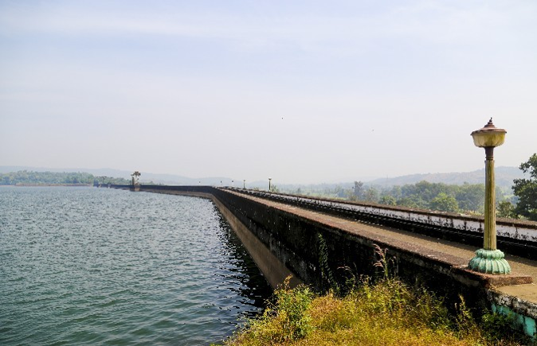
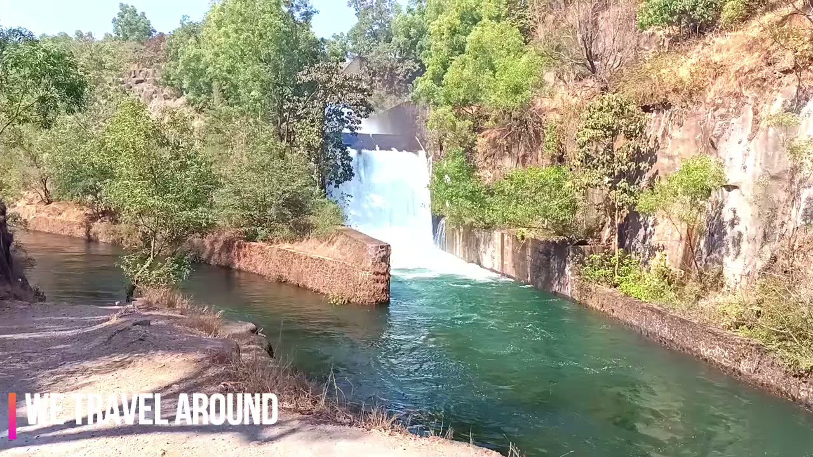
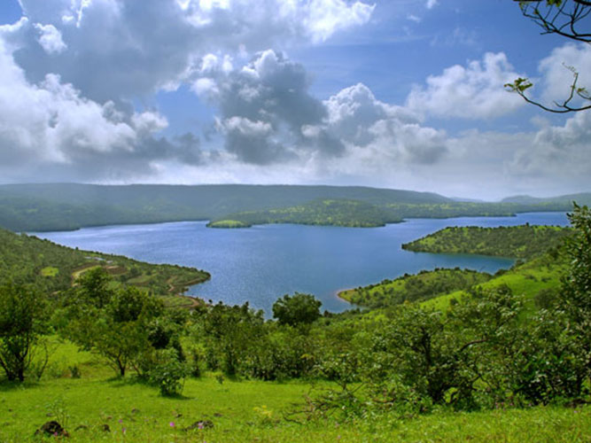
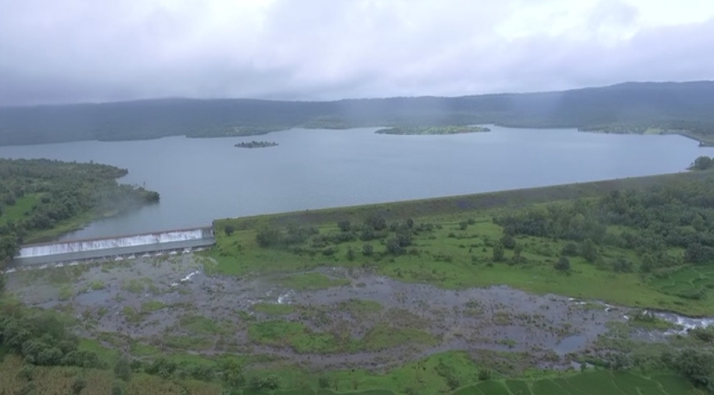

Radhanagri Dam |
Radhanagari Dam, is a gravity dam on Bhogawati river near Radhanagari in the state of Maharashtra in India. Construction was initiated by visionary Rajarshi Shahu on 18 February 1907. The dam is being used for irrigation as well as hydro-electricity. The dam is located amidst scenic surrounding in the backdrop of thick forest cover.
Radhanagari Dam supports large variety of Flora and Fauna. It is surrounded by dense forest and has wide variety of wildlife and naturally evolved ecosystem. It was because of Mr P K Shinde's efforts that thermo-electric project and mining for metals was sidelined. Radhanagari Dam not only has a technology worth studying but also a history, that changed the fate of agriculture in Kolhapur.
Radhanagari Dam
|
Kalammwadi |
Kalammawadi dam is biggest dam in Kolhapur Dist. It’s a build in south west kolhapur Radhanagri Taluka. There is a temple of godess Kalamma Devi. Also Indian Gour area and huge biodiversity place.
Kalammawadi Dam
|
Manoli |
Manoli Minor Irrigation Project situated at village Manoli has unique locational advantages as it is placed in hilly areas of Amba Valley. Manoli with a reservoir of 0.18 TMC capacity. The entire surrounding and ambience enjoys rich floura and fauna nearly green through out the year.
Manoli village being situated in Abode of Amba Valley with dense jungle has tremendous potential for tourism. The waste weir wall of Manoli MI Tank provides beautiful Waterfall location and thousand of Tourist visit every year to enjoy the view and waterfall in Monsoon season. Manoli lake is having navigation facility and people are enjoying this facility.
Manoli Dam has number of Resorts, Hotels and lodging to facilitate tourist for easy stay and comfortable enjoyable vacation.
Manoli Dam
|
Chitri Dam |
Chitri Dam is situated in Sahyadri ranges near village Ite, 11 kms from Ajara Taluka place. The dam and reservoir premises are surrounded by mountains and very beautiful scenery. Chitri Dam is situated at 2400 ft. above MSL having water storage capacity 1.80 TMC. In the vicinity hills nearby the location of dam, paddy grown on stepped terraces of lands which have resemblance to Tea tree plantation at Kerala and Assam on the hills. Many more tourists visit this place in rainy season in entire surrounding and ambience enjoys rich flora and fauna nearly green throughout the year. Around the dam within reach of 20-25 km, there are other tourist locations like Amboli hill station, waterfall, Ramtirth temple and waterfall, Chaloba Temple etc.
Chitri Dam
|